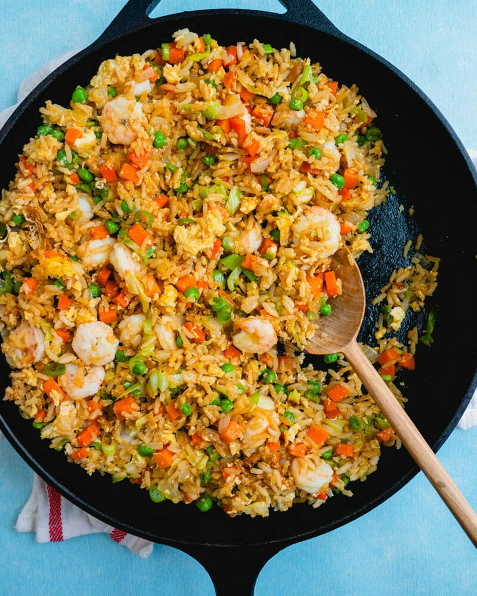

Shrimp Fried Rice Recipe

Description
Here’s a weeknight dinner that gives us that cozy feeling every time we make it: Shrimp Fried Rice!
It’s over the top delicious and total comfort food. Follow this recipe and it’s the path to shrimp fried rice that’s easy and irresistibly tasty. The garlic, ginger and soy sauce meld perfectly with the colorful veggies, bursts of shrimp and gooey bits of egg into a symphony of flavor.
It’s one of my favorites for weeknight cooking…ever.
Ingredients you need:
- Rice
- Sesame oil
- Onion and garlic
- Fresh ginger
- Carrots, peas, and green cabbage(optional)
- Eggs
- Soy sauce
- Mfin shrimp
Steps
- Thaw the shrimp.
- Mince the onion. Mince the garlic. Mince the ginger. Peel the carrots, then dice them. If using, chop the cabbage.
- Pat the shrimp dry. In a large skillet, heat 2 tablespoons sesame oil on medium high heat. Add the shrimp for about 1 minute per side until just opaque cooked through, turning them with tongs. They can be slightly undercooked because you’ll be adding them to the rice later. Sprinkle with ½ teaspoon salt. Remove to a bowl and set aside.
- In a large skillet or wok, heat 2 tablespoons of the sesame oil medium high. Saute the carrots and onion for 2 minutes. Add the cabbage, garlic and ginger and saute for 2 minutes. Stir in the rice, peas and the remaining ½ teaspoon salt for 1 minute.
- Push the rice to the side. Add 1 tablespoon more oil. Add the eggs and pinch of salt, and scramble them in for 1 to 2 minutes until cooked through.
- Add the soy sauce and fish sauce, if using. Use tongs to add the shrimp (to remove them from liquid that accumulated in the bowl) and heat for a minute or two, stirring, until all rice is coated. Taste and add additional soy sauce if necessary. Serve hot.
Bon Appetit!